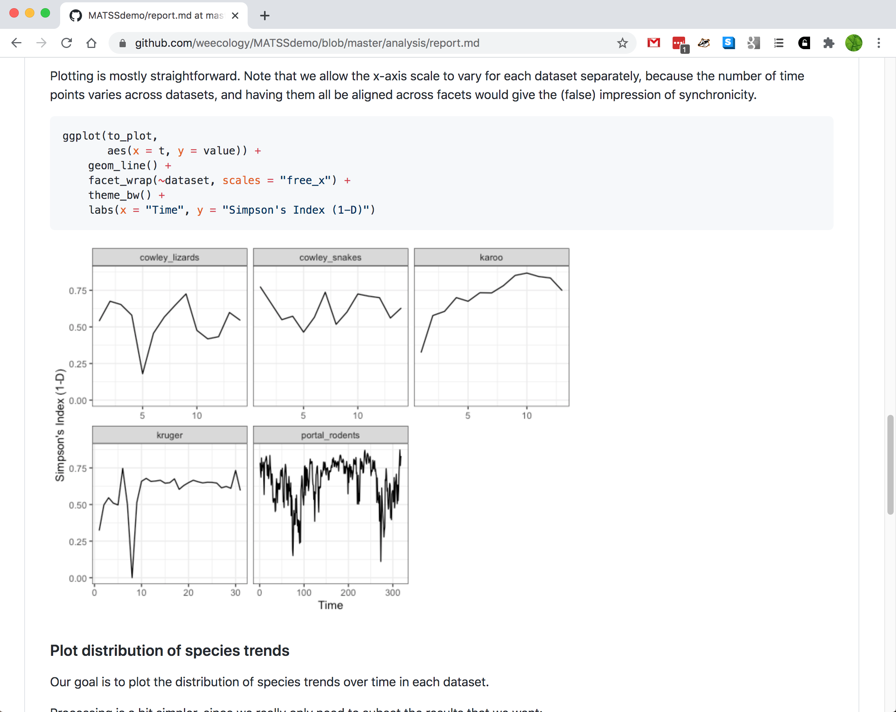

Syllabus
Hao Ye Health Science Center Libraries, University of Florida (updated: 2021-02-16)
Intro
- Motivations Good practices save time in project management:
- revert back to previous versions
- interact with collaborators working on the same files
- share your work and have it cited
- Learning Outcomes By the end of the workshop, participants will be able to:
- explain the benefits of version control
- articulate the differences between
gitandGithub - create and update repositories using Github Desktop and the Github website
- write descriptive README files
- select and apply a license to a GitHub project
- Version Control Concepts
- Version Control Tools/systems to manage changes to files. ## So what?
- MS Word has “track changes”
- Dropbox / Google Drive can revert versions
- Version Control is for projects
- changes that are not in MS Word
- restore a specific project state involving multiple files that have changed
- knowing who made changes and why
- handle multiple collaborators working on the same files
- Example scenarios
- You change a histogram to a bar plot, and then you want to change it back.
- Your collaborator makes edits while traveling, and you need to merge their changes with your own changes.
- You want to experiment with a different dataset / analysis / narrative without duplicating everything
- Git and GitHub
- Git
- software and version control system
- notoriously unfriendly
- unintuitive command names
- obscure error messages This workshop is NOT about git!
- check out the resources page for tutorials, guides, etc.
- Git Concepts
- Git tracks the history of a project folder and its contents
- the folder is called a repository or repo
- Tracking of the changes occurs via taking a snapshot of repo:
- the snapshot is called a commit

- the snapshot is called a commit
- Git tracks the history of a project folder and its contents
- Commit Contents
- each commit requires a commit message
- 1-line summary
- blank line
- further details
- commits also record who and when (automatically)
- each commit requires a commit message
- Creating Commits
- each commit is constructed manually
-
addfiles that have changed, or new files- Git tracks information about changes between commits, so only the changed files need to be noted
- one common method is to add all the files in the repo
- manual commits give precise control over what is recorded in each version
- GitHub
- a cloud platform that hosts Git repos
- unlimited public and private repos
- size limits:
- 1 GB for each repo
- 100 MB for individual files
-
GitHub Education has some benefits
- but many features are now free
- GitHub in a Web Browser
- Using GitHub
- https://github.com
- create an account / log in
- create a new repo
- upload files
- write a commit message
- DEMO
- Using Git Clones
- Synchronizing Repos
- Git repos can exist in multiple locations:
- clone = “make a copy of a Git repo”
- push = “send new commits from here to somewhere else”
- pull = “retrieve new commits from somewhere else to here”
- Git repos can exist in multiple locations:
- Working with Git clones
- you need the
Gitsoftware- instructions from Software Carpentry
-
guide to command-line usage
(too advanced for this workshop)
-
GitHub Desktop
- graphical interface for Git
- also syncs your computer with GitHub
- you need the
- DEMO
- Best Practices for Git Repos
- Readme
- a
README.mdfile in the top directory- what the project is about
- who is working on it
- who is it for
- installation/usage instructions
- a
- License
- a
LICENSEfile in the top directory- how other people can use your content
- by default, in the US, you have full rights on creative works
- select based on content type:
- MIT (permissive, code)
- CC-BY (permissive, non-code)
- CC0 (public-domain, data)
- a
- Adding a license
- when creating a new repo, you have the option of choosing the template for an existing license
- on github.com, adding a file named
LICENSEbrings up a button:
- Markdown
- GitHub will render some common file formats directly in the web browser:
- images, plain text
- markdown is preferred for formatting text and images
- uses plain text, but renders nicely
- a guide to syntax 
- GitHub will render some common file formats directly in the web browser: